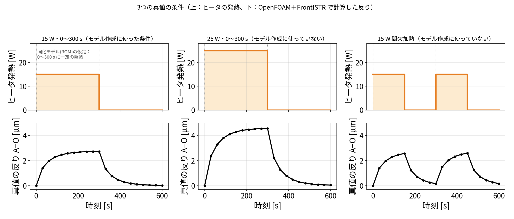
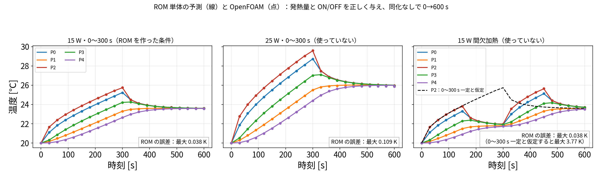
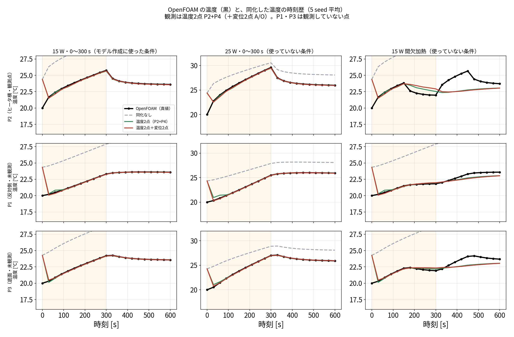
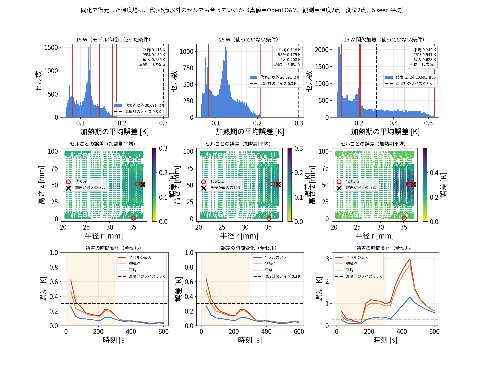
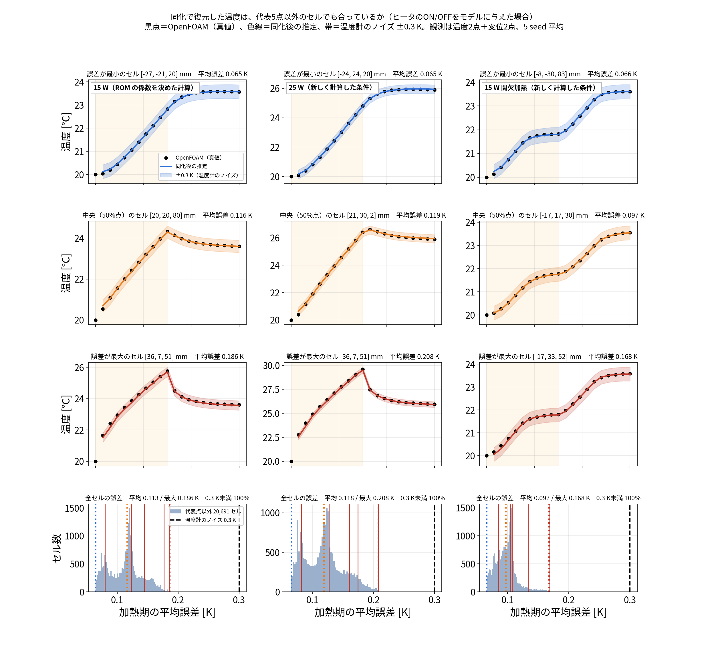
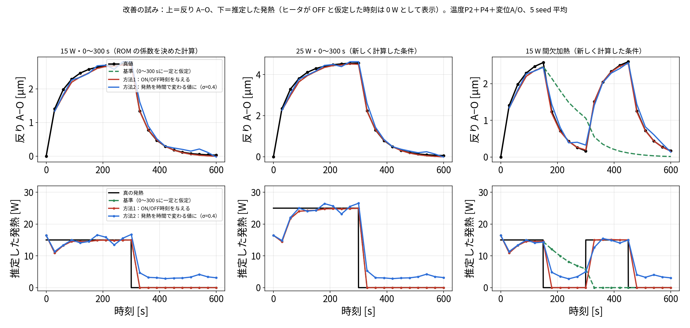
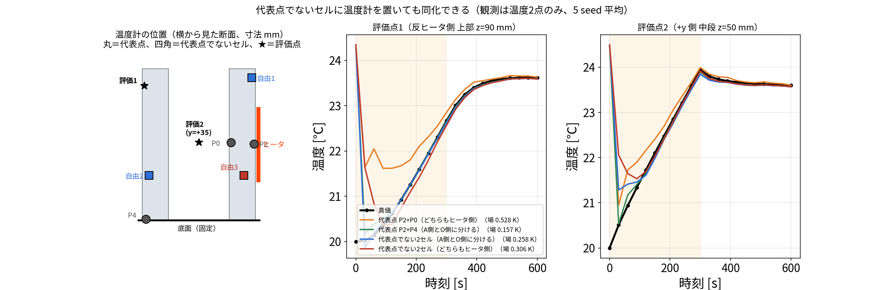

blog_004 で、OpenFOAM の計算1本から 5点の熱回路モデル（ROM） を作りました。 600 秒の計算が 31 ms で終わる軽いモデルですが、当然こう思います。
この ROM は、作ったときと違う条件でも使えるのか？
この記事は、その問いに実際の計算で答えた記録です。 「確かめた」と書いたものはすべて計算した結果で、確かめていないものは「未確認」と明記しています。
blog_006〜008 の役割分担
記事 扱うこと 真値 blog_006 データ同化の手順。温度2点＋変位2点をどう使い、なぜ発熱量が直るか ROM の双子実験 blog_007 ROM の適用範囲。条件が変わっても使えるか OpenFOAM＋FrontISTR blog_008 主張と先行研究。研究としてどこが新しいか ROM（§4・§5）と
OpenFOAM＋FrontISTR（§6・§7）数値は重複を避け、各記事が担当する検証だけを載せています。
| 内容 | |
|---|---|
| 確かめたいこと | blog_004 で作った ROM（5点の熱回路モデル）は、係数を決めたときと違う条件でも使えるのか。使えるなら何が変わっても大丈夫で、何が変わると作り直しが要るのか |
| 2つの問いを分ける | 問い A：ROM そのもの（データ同化なし）が OpenFOAM を再現できるか／問い B：その ROM で少数のセンサからデータ同化できるか（§2） |
| 真値（正解） | OpenFOAM で新しく計算した温度場と、それを FrontISTR に入れた変位。ROM 同士の比較ではありません |
| 比べる3条件 | ① 15 W・0〜300 秒（ROM の係数を決めた計算）／② 25 W・0〜300 秒（新しく計算）／③ 15 W 間欠加熱＝0〜150 秒と 300〜450 秒（新しく計算） |
| 使えると判断する目安 | 誤差が温度計のノイズ 0.3 K より小さいこと（実際に測っても読み取れない差） |
| データ同化の設定（問い B） | 温度2点（P2＋P4）＋変位2点（A・O）、EnKF・60メンバー・30 秒ごと20回・5 seed、温度ノイズ 0.30 K、変位ノイズ 0.30 µm |
| 評価 | 加熱期 30〜300 秒の平均。温度場は全 20,696 セルで評価（代表5点だけではない） |
この記事で分かること 1. 発熱量が変わっても（15 W → 25 W）、作り直さずに使える 2. 加熱のしかたが変わっても使える。ただしヒータへの入力の与え方は変える必要がある 3. 使えるかどうかの決め手は、温度分布の「型」が変わるかどうか 4. センサは ROM の代表5点に置かなくてよい
関連記事：ROM の作り方は blog_004、データ同化の手順は blog_006、センサの置き場所は blog_005。
ROM（5点の熱回路モデル）は、物性値を積み上げて作ったのではありません。 OpenFOAM で1回計算した結果に合うように、係数を逆算して作りました。
その1回が、ヒータ 15 W を 0〜300 秒入れ、300〜600 秒は切るという計算です。 この結果を見ながら、POD の型・代表5点・ROM の係数・温度→変位の行列を決めました。
ROM を作ったあと、別の条件で OpenFOAM を新しく計算し直して、ROM と比べます。
| 呼び方 | ヒータ | ROM の係数を決めるときに見たか |
|---|---|---|
| 15 W・0〜300 秒 | 15 W を 0〜300 秒 | 見た（この結果から ROM を作った） |
| 25 W・0〜300 秒 | 発熱量だけ 25 W に変更 | 見ていない（この記事のために新しく計算） |
| 15 W 間欠加熱 | 0〜150 秒と 300〜450 秒に 15 W | 見ていない（同上） |
15 W・0〜300 秒で合うのは当たり前です。その結果に合わせて係数を決めたのですから、 合わなければ作り方が間違っています。
知りたいのは「係数を決めるときに見ていない条件でも合うか」です。 合えば実際の運転で使える見込みがあり、合わなければその条件では作り直しが要ります。
以下、表や図では次のように書きます。
熱源の位置と形状が同じなら、この ROM はそのまま使えます。 発熱量が変わっても、加熱のしかた（いつ入れて切るか）が変わっても、作り直しは要りません。 ただし加熱のしかたが変わる場合は、「いつヒータが入っているか」をモデルに教える必要があります。 熱源の位置・形状・材料が変わったら作り直しです。
ROM が「使えている」かどうかは、次の2つで判断しました。
| 見るもの | 使えると判断する目安 | なぜその目安か |
|---|---|---|
| ROM 単体の誤差（データ同化なし、発熱量を正しく与えた場合） | 温度計のノイズ 0.3 K より小さい | 実際にセンサで測っても、その差は読み取れないため |
| データ同化した後の温度場の誤差 | 0.3 K より小さい（代表点以外も含む） | 同上 |
| 条件が変わったとき | 使えるか | 根拠 |
|---|---|---|
| 発熱量が変わる（15 W → 25 W） | 使える（作り直し不要） | ROM 単体の誤差 0.11 K、データ同化すると温度場 0.14〜0.15 K、発熱量も 24.9〜25.1 W と推定（§5） |
| 加熱のしかたが変わる（間欠加熱） | ROM そのものは使える（§2）。データ同化では、ヒータへの入力の与え方を変える必要がある | ON/OFF を正しく与えれば ROM 単体の誤差 0.038 K（作った条件と同じ）。データ同化でも反りの誤差 0.08 µm（§7） |
| 25 W より大きく外れた発熱量 | 未確認 | データ同化まで回したのは 25 W だけ |
| 別の加熱のしかた（ランプ状、30 秒より短い ON/OFF など） | 未確認 | 試したのは間欠加熱1通り |
| 600 秒より長い運転 | 一部だけ確認 | 5,000 秒の試験はあるが、真値も ROM（§8） |
| 熱源の位置が変わる | 作り直しが必要（試していない） | 温度分布の「型」そのものが変わるため |
| 形状・メッシュが変わる | 作り直しが必要 | 型が 20,696 セルに結び付いているため |
| 温度分布の型（モード）そのものが大きく変わる | 使えない（型を作り直す） | 型は固定で、変えられるのは混ぜ具合だけ（§9） |
| 周囲温度・取り付け（拘束）条件が変わる | 未確認 | ROM は気温 20 ℃、底面固定で作った |
| 観測点を代表5点以外にしたい | できる（作り直し不要） | 代表点でない2セルでもデータ同化できた（§10） |
| 代表5点以外のセルの温度も合うか | 合う | 全20,696セルで誤差 0.3 K 未満（15 W・25
W・間欠加熱※）。代表点以外のほうがむしろ小さい（§6） ※間欠加熱はヒータの ON/OFF をモデルに与えた場合 |
この記事では2つの問いを扱います。混ざりやすいので、先に分けておきます。
| 問い | 何を見るか | |
|---|---|---|
| 問い A | ROM そのもの（モデル単体）は、この条件を再現できるか | 発熱量と ON/OFF を正しく与えて、データ同化なしで 0→600 秒を一気に計算し、OpenFOAM と比べる |
| 問い B | その ROM を使ったデータ同化は、少ない観測から温度場を推定できるか | 発熱量は分からないものとして推定しながら、センサ数本でデータ同化する |
問い A は「モデルとして正しいか」、問い B は「実際に使えるか」です。
ROM そのものは、間欠運転にも使えます。 発熱量を変えても使えます。
理由はモデルの式にあります。
\[ C_i\frac{dT_i}{dt}=\sum_j K_{ij}(T_j-T_i)+P_i(t)-h\,(T_i-T_\mathrm{air}) \]
この図で示したいこと 同じ 15 W のヒータで、加熱のしかたを「0〜300 秒ずっと ON」から「間欠運転（0〜150 秒・300〜450 秒 ON）」に変えても、ROM はそのまま使える。 ROM は「0〜300 秒ずっと ON」の計算 1 本から作ったものですが、作り直しは要りません。ヒータの ON/OFF を実際と同じに与えるだけで、OpenFOAM との差は最大 0.038 K（温度計のノイズ 0.3 K の約 1/8）でした。 その証拠が下の図の左です。右は「ON/OFF を与えなかったらどうなるか」を見せるための比較用です。
OpenFOAM で新しく計算した間欠加熱（0〜150 秒と 300〜450 秒に 15 W）と、ROM を直接比べます。 データ同化は一切していません。 発熱量と ON/OFF を与えて、ROM を 0→600 秒まで一気に計算しただけです。
この図では、ROM を2通りに計算して並べています。
| ROM に与えたヒータの ON/OFF | OpenFOAM と同じ条件か | 結果 | |
|---|---|---|---|
| 左 | 0〜150 秒・300〜450 秒に 15 W | 同じ | 合う（最大 0.038 K） |
| 右 | 0〜300 秒ずっと 15 W（プログラムの初期設定のまま） | 違う（わざと） | 150 秒以降で外れる（最大 3.8 K） |
右は、条件が食い違うと何が起きるかを見せるため、わざとずらしたものです。 以前「ROM は間欠加熱では合わない」と書いていたのは、この右の状態のまま計算していたためでした（原因はすぐ下の「間欠加熱で合わなかった原因」）。 左のように OpenFOAM と条件を合わせれば、ROM は間欠加熱でも合います。
太い薄い線＝OpenFOAM、細い破線＝ROM（同じ色が同じ点）。左＝ヒータの ON/OFF を OpenFOAM と同じ（0〜150 秒・300〜450 秒）に与えた ROM：破線が太い線の上にぴったり乗っている＝合っている。右＝比較のため、ON/OFF を与えず「0〜300 秒に一定」と決め打ちしたままの ROM：150 秒以降で外れる。下段はその差で、帯は温度計のノイズ ±0.3 K。
| ヒータへの入力の与え方 | ROM 単体の誤差（5点の最大） | 誤差の平均 |
|---|---|---|
| 正しい ON/OFF を与える | 0.038 K | 0.013 K |
| 0〜300 秒に一定と仮定したまま | 3.775 K | 0.699 K |
ROM そのものは間欠運転を再現できます。 右で外れているのは、モデルの能力ではなく、与えた入力が実際と違うからです。
これまで「間欠加熱では合わない」と書いていたのは、モデルの限界ではなく、プログラムの決め打ちでした。
dacore/rom_general.py のヒータ関数が
HEATER_RATED_W = 15.0
HEATER_ON_S = 300.0 # ← 「0〜300秒だけ発熱」と決め打ち
def heater_power_W(t, q_scale=1.0):
return np.where(np.asarray(t) < HEATER_ON_S, q_scale * HEATER_RATED_W, 0.0)となっていて、「0〜300 秒だけ発熱する」と書き込まれていました。 間欠加熱のときは、この関数が実際と食い違うので外れます。ヒータの関数を差し替えれば解決します（§7 の方法1）。
まとめ - ROM そのもの（問い A）：間欠運転に使える。 式の構造上、加熱パターンを選びません。 - データ同化（問い B）：ヒータの ON/OFF をモデルに教える必要がある。 教えれば同じ精度、教えないと誤差は約10倍。
ROM は、OpenFOAM の計算1本（15 W を 0〜300 秒加熱し、300〜600 秒は自然に冷やす）から作りました。
| 部品 | 何を決めたか | その1本の計算から作ったか | 条件が変わると |
|---|---|---|---|
| POD の型（モード） \(U_r\) | 温度分布の「型」5つ（20,696 セル × 5） | 0〜600 秒の 121 時刻から | 熱源の位置・形状が変わると作り直し |
| 代表5点（Q-DEIM） | 測る・計算する5点 P0〜P4 | 上の型から | 型と同じ |
| ROM の係数 | 熱容量 \(C_i\) 、点どうしの熱の通りやすさ \(K_{ij}\) 、放熱 \(h\) | 5点の温度履歴に合わせて校正 | 物性・形状・放熱の条件が変わると作り直し |
| 変位の写像 \(D\) | 型ごとの FrontISTR の変位 | 型を FrontISTR に入れて6回計算 | 型・拘束条件が変わると作り直し |
| ヒータへの入力 | 「ヒータ点（P2）に \(q\times15\) W、0〜300 秒だけ」 | 決め打ち | 加熱のしかたが変わると、ここを変える（§6） |
ROM の式は次のとおりです。
\[ C_i\frac{dT_i}{dt}=\sum_j K_{ij}(T_j-T_i)+P_i(t)-h\,(T_i-T_\mathrm{air}) \]
（ \(P_i(t)\) はヒータの発熱。ヒータ点 P2 だけに入る）
発熱量と加熱のしかたは、右辺のヒータの項 \(P_i(t)\) にしか入っていません。 熱容量・熱の通りやすさ・放熱の部分は、発熱量にも加熱のしかたにもよりません。これが、§4・§5 で作り直さずに使えた理由です。
真値はすべて、OpenFOAM で計算した温度場と、それを FrontISTR
に入れて計算した変位です。25 W
と間欠加熱は、この確認のために新しく計算しました（openfoam/limit/）。

上：ヒータの発熱。下：OpenFOAM＋FrontISTR で計算した反り A−O。
この節で知りたいこと：発熱量が ROM の係数を決めたときの 15 W と違っても、ROM は使えるか
条件：真値＝OpenFOAM（25 W・0〜300 秒、この記事のために新しく計算）。問い A（データ同化なし）と問い B（データ同化あり）の両方を見る

上：太い薄い線＝OpenFOAM、細い破線＝ROM（同じ色が同じ点。データ同化なし、0→600 秒を一気に計算）。 3列とも、ROM には発熱量とヒータの ON/OFF を OpenFOAM と同じに与えています。破線が太い線の真ん中に乗っていれば合っている。 右列の黒い点線は参考で、ON/OFF を与えず「0〜300 秒一定」のままにした ROM（P2）。下：ROM と OpenFOAM の差。帯は温度計のノイズ ±0.30 K の幅。
どの程度使えるかを、この図の下段で判断できます。
| 条件 | 最大の温度上昇 | ROM の誤差（5点の最大） | 誤差の平均 | 温度上昇に対する比 | 温度計のノイズ 0.3 K との比 |
|---|---|---|---|---|---|
| 15 W（ROM の係数を決めた計算） | 5.8 K | 0.038 K | 0.011 K | 0.7 % | 約 1/8 |
| 25 W（新しく計算した条件） | 9.6 K | 0.109 K | 0.026 K | 1.1 % | 約 1/3 |
| 間欠加熱（ON/OFF を与える） | 5.7 K | 0.038 K | 0.013 K | 0.7 % | 約 1/8 |
判断：この題材では、ROM 単体の予測は OpenFOAM の代わりとして使える水準です。 600 秒の計算が 31 ms で終わり、誤差は温度計のノイズ以下だからです。 ただし、これはデータ同化なしで発熱量と ON/OFF を正しく与えた場合の話です。実際には発熱量は分からないので、データ同化でそれを推定します（§4 の下の表）。
POD の5つの型で 25 W の温度場全体を表したときの誤差は 0.003 K でした（15 W では 0.0007 K）。固体の熱伝導は発熱量に比例するので、温度分布の形はほぼ同じで、大きさだけが変わるためです。
| 条件 | 温度場全体の誤差 | 反り A−O の誤差 | 推定した発熱量 |
|---|---|---|---|
| 15 W | 0.13 K | 0.16 µm | 15.10 W |
| 25 W | 0.14 K | 0.17 µm | 25.07 W |
ROM 単体で増えた誤差は、データ同化で補正されてほとんど差がなくなりました。発熱量はデータ同化で毎回推定しているので、ROM を作ったときの 15 W に縛られません。
この節でやったこと：OpenFOAM の計算を「本物の機械」とみなし、そこからセンサの読みだけを取り出して ROM でデータ同化しました。 データ同化で推定した温度が、OpenFOAM の温度（＝正解）にどこまで合うかを、時間を追って比べます。
手順（
run/make_da_vs_openfoam_timeseries.py ）
| 段階 | やったこと |
|---|---|
| ① 正解を用意する | OpenFOAM で 3 条件（15 W・25 W・間欠加熱）を計算した固体の温度。変位の正解は、その温度場を FrontISTR に入れて計算した上面 A・O の \(U_z\) |
| ② センサの読みを作る | 正解から、30 秒ごとに「温度計 P2・P4 の温度」と「変位計 A・O の変位」を取り出し、ノイズ（温度 0.3 K、変位 0.3 µm）を足す |
| ③ データ同化を始める | ROM で 60 メンバーを用意。最初の温度は 17〜32 ℃、発熱量は 4.5〜27 W のばらばら（正解は教えない） |
| ④ 30 秒ごとにくりかえす | ROM で 30 秒予報 → ②のセンサの読みと比べて、5点温度・発熱量・放熱を補正（EnKF）。0〜600 秒で 20 回 |
| ⑤ 比べる | 各時刻の補正後の温度（60 メンバーの平均）を、5 つの乱数で回した平均にし、OpenFOAM の温度と並べる |
図の4本の線
| 線 | 中身 |
|---|---|
| 黒 | OpenFOAM の温度（正解） |
| 灰の破線 | データ同化なし：③の 60 メンバーを補正せず ROM で進めただけ（発熱量の初期平均は約 17 W で、最初の温度も高め） |
| 緑 | 温度計 P2・P4 の2本だけでデータ同化 |
| 赤 | 温度計2本 ＋ 変位計 A・O の2本でデータ同化 |
行は代表点：P2 は温度計を置いた点、P1・P3 は温度計を置いていない点（ここが合えば、測っていない場所も推定できている）。 列は条件：左＝15 W（ROM の係数を決めた条件）、中＝25 W（決めていない条件）、右＝間欠加熱。
注意（右列）：この計算では ROM にヒータの ON/OFF を教えていません（プログラムの初期設定「0〜300 秒に一定」のまま）。 15 W・25 W は実際も 0〜300 秒なので一致しますが、間欠加熱だけは実際（0〜150 秒・300〜450 秒）と食い違っています。

黒＝OpenFOAM（真値）、灰の破線＝データ同化なし、緑＝温度2点（P2＋P4）、赤＝温度2点＋変位2点。 行は点（P2 は観測点、P1・P3 は観測していない点）、列は条件。
（詳細：研究の優位性を確かめる追加検証 ②）
この節で分かったこと - 発熱量が 15 W → 25 W に変わっても、ROM は作り直し不要。 - ROM 単体の誤差は 0.11 K で、温度計のノイズ 0.3 K の約 1/3。温度上昇 9.6 K に対して 1.1 %。 - データ同化すると温度場 0.14 K・反り 0.17 µm で、15 W のときとほぼ同じ。発熱量も 25.07 W と推定できた（真値 25 W）。 - 理由：発熱量はデータ同化で毎回推定しているので、係数を決めたときの 15 W に縛られない。
この節で知りたいこと：ROM は5点しか追いかけないが、そこから復元した残り 20,691 セルの温度も合っているか
条件：真値＝OpenFOAM の温度場（3条件）。観測＝温度2点（P2＋P4）＋変位2点（A・O）。EnKF・60メンバー・30 秒ごと20回・5 seed。加熱期 30〜300 秒の平均
ROM は5点の温度しか追いかけません。そこから POD で 20,696
セル全体を復元します。
では、復元した温度は代表5点以外のセルでも合っているのかを、全セルで確かめました（run/check_all_cells_after_da.py）。
真値は OpenFOAM の温度場そのものです。観測は温度2点（P2＋P4）＋変位2点（A/O）、5 seed 平均です。
ROM と OpenFOAM の条件が合っているか
| 列 | OpenFOAM のヒータ | ROM に与えたヒータ | 条件 |
|---|---|---|---|
| 左：15 W | 0〜300 秒 ON | 0〜300 秒 ON | 合っている |
| 中：25 W | 0〜300 秒 ON | 0〜300 秒 ON（発熱量はデータ同化で推定） | 合っている |
| 右：間欠加熱 | 0〜150 秒・300〜450 秒 ON | 0〜300 秒 ON のまま（ON/OFF を教えていない） | 合っていない |
右列は ON/OFF を教えていないので、2回目の加熱（300 秒以降）で外れます。 ON/OFF を教えて条件を合わせた場合の図は、この節の最後の【追加】にあります（そちらでは右列も合います）。

各列が条件、各行がセル。上3段が温度そのもので、黒点＝OpenFOAM（真値）、色線＝データ同化後の推定、 帯＝温度計のノイズ ±0.3 K。黒点が帯の中に入っていれば「測っても区別できない精度」。 誤差が最小・中央・最大のセルを1つずつ選んである。最下段は全 20,696 セルの誤差の分布（点線＝上の3セルの位置）。
| 条件 | 全セルの平均 | 95%点 | 最大 | 代表5点の平均 | 代表点以外の平均 | 0.3 K 未満のセル |
|---|---|---|---|---|---|---|
| 15 W（ROM の係数を決めた計算） | 0.113 K | 0.159 K | 0.186 K | 0.142 K | 0.112 K | 100 % |
| 25 W（新しく計算した条件） | 0.118 K | 0.175 K | 0.208 K | 0.150 K | 0.118 K | 100 % |
| 間欠加熱（ON/OFF を教えていない） | 0.240 K | 0.547 K | 0.633 K | 0.321 K | 0.240 K | 69.8 % |
（加熱期 30〜300 秒の平均誤差）
15 W と 25 W（条件が合っている列）では、黒点が帯の中に収まっています。 いちばん誤差が大きいセル（ヒータ横 (36, 7, 51) mm）でも、加熱から冷却まで線が点から離れません。 温度でいうと 5.8 K 上がるうちの 0.19 K（25 W では 9.6 K 中 0.21 K）のずれです。 最下段の分布を見ても、20,696 セルすべてが温度計のノイズ（0.3 K）より小さい誤差に収まりました。
代表点以外のほうが、むしろ誤差が小さい。 15 W では代表5点 0.142 K に対し、代表点以外は 0.112 K でした。25 W でも同じ傾向です。 代表5点はヒータの近くや底面など温度変化が大きい場所に選ばれているので、誤差もそこで大きくなります。 「測った点だけ合って、ほかは合っていない」という心配は不要でした。
間欠加熱（右列、ON/OFF を教えていない）は、300 秒を過ぎると黒点が帯から大きく外れます。 真値は2回目の加熱で 24〜25 ℃ まで上がりますが、推定は 23 ℃ 付近で止まっています（最大 0.633 K、0.3 K を超えるセルが 30 %）。 ROM が「0〜300 秒に一定の発熱」のままで、2回目の加熱を予測できないためです。ON/OFF を教えると合います（下の【追加】）。
上の結果で間欠加熱だけ合わなかったのは、データ同化に使った
ROM が「0〜300
秒に一定の発熱」の決め打ちのままだったからです（§2 の問い B）。
そこで、ヒータの ON/OFF
時刻だけをモデルに与えて、同じ検証をやり直しました（KNOWN_SCHEDULE=1 python3 run/check_all_cells_after_da.py）。

ヒータの ON/OFF をモデルに与えた場合。見方は上の図と同じ。
| 条件 | 全セルの平均 | 最大 | 代表点以外の平均 | 0.3 K 未満のセル |
|---|---|---|---|---|
| 15 W | 0.113 K | 0.186 K | 0.112 K | 100 % |
| 25 W | 0.118 K | 0.208 K | 0.118 K | 100 % |
| 間欠加熱（ON/OFF を与えた） | 0.097 K | 0.168 K | 0.097 K | 100 % |
（15 W と 25 W は ON/OFF が元々 0〜300 秒なので、上の表と同じ値です）
間欠加熱の誤差は 0.240 K → 0.097 K、最大は 0.633 K → 0.168 K になりました。
| 間欠加熱の比較 | 平均 | 最大 | 0.3 K 未満 |
|---|---|---|---|
| ヒータを「0〜300 秒に一定」と仮定したまま | 0.240 K | 0.633 K | 69.8 % |
| ON/OFF 時刻を与える | 0.097 K | 0.168 K | 100 % |
図の右列を見ると、黒点が完全に帯の中に収まっています。2回の加熱で温度が階段状に上がる様子も、線が点に重なったまま追えています。 しかも3条件のなかで間欠加熱がいちばん誤差が小さい（0.097 K）という結果になりました。 加熱が2回に分かれるぶん温度上昇が緩やかで、データ同化が追いやすかったためと考えられますが、確かめてはいません。
結論：ROM の係数を決めた計算の条件でも、発熱量を変えた条件でも、復元した温度場は全セルで温度計のノイズより小さい誤差でした。 代表点以外も合っています。 間欠加熱も、ヒータの ON/OFF をモデルに与えれば全セルがノイズ以下に収まります。 合わないのは、加熱のしかたがモデルの仮定と食い違ったままデータ同化した場合だけです。
この節で分かったこと - 代表5点以外のほうが、むしろ誤差が小さい（15 W で 0.112 K 対 0.142 K）。「測った点だけ合う」心配は不要。 - 15 W・25 W では 20,696 セルすべてが温度計のノイズ 0.3 K 未満（最大 0.186・0.208 K）。 - 間欠加熱は、ヒータを決め打ちのままだと 30 % のセルが 0.3 K を超える。 ON/OFF をモデルに与えれば全セルがノイズ以下（平均 0.097 K、最大 0.168 K）。
この節で知りたいこと：ヒータの入れ方が変わっても ROM は使えるか。使えないなら何を変えればよいか
条件：真値＝OpenFOAM（15 W を 0〜150 秒と 300〜450 秒、新しく計算）。ROM の係数はそのまま
上の図の右が間欠加熱です。
| ヒータへの入力の与え方 | ROM の誤差（5点の最大） |
|---|---|
| 正しい ON/OFF（0〜150 秒と 300〜450 秒）を与える | 0.038 K（作った条件と同じ） |
| 0〜300 秒に一定と仮定したまま | 3.77 K（黒の破線） |
ROM そのものは間欠加熱でも正しく予測できます（誤差 0.038 K ＝ ROM を作った条件と同じ、温度計のノイズの約 1/8）。外れたのは、ヒータへの入力を 0〜300 秒に決め打ちしていたときだけで、そのときは 3.77 K ＝ ノイズの 12 倍にもなりました。

| ヒータへの入力の与え方 | 想定している場面 | 反りの誤差 |
|---|---|---|
| 0〜300 秒に一定と仮定 | ― | 0.91 µm |
| ON/OFF 時刻を与える | 主軸・モータを「いつ回したか」が NC 装置から分かる | 0.08 µm |
| 発熱を時間で変わる値として推定（σ=0.4） | ON/OFF 時刻も分からない | 0.18 µm |
| （参考）従来の回帰式 | ― | 0.30 µm |
（詳細：研究の優位性を確かめる追加検証 ④）
この節で分かったこと - ROM そのものは間欠運転に使える（§2）。合わなかったのはプログラムの決め打ちが原因。 - ヒータの ON/OFF 時刻を与えれば、反りの誤差 0.91 → 0.08 µm（回帰式 0.30 µm より小さい）。 - ON/OFF が分からなくても、発熱を時間で変わる値として推定すれば 0.18 µm。 - ただし発熱量の推定値は、ヒータを切った後も 3〜4 W 残る。
放熱 \(h\) を推定できるかを、5,000 秒まで延ばして調べた試験があります（研究レビュー）。 \(h\) の推定誤差（3 seed 平均）は、600 秒で 56.7 %、5,000 秒で 1.30 % でした。
ただし、この試験の真値は ROM そのものです。600 秒を超える OpenFOAM の計算は行っていないので、長い時間で ROM 自体が OpenFOAM と合うかは未確認です。
この節で知りたいこと：条件が変わったとき、「使える／作り直し」をどう判断すればよいか
条件：新しい条件の温度場（OpenFOAM）を、POD の5つの型でどこまで表せるかを測る
ROM が使えるかどうかは、新しい条件の温度分布が、作ったときの5つの型（モード）の組み合わせで表せるかで決まります。
\[ T(t)\approx\bar T+U_r\,a(t) \]
型 \(U_r\) は固定で、変えられるのは混ぜ具合 \(a(t)\) だけです。そのため、
新しい条件の温度場（OpenFOAM の 20,696 セル全体）を、5つの型の組み合わせで最も近く表したときに残る誤差を計算しました（30〜600 秒の平均）。
| 条件 | 型で表したときに残る誤差 | 判定 |
|---|---|---|
| 15 W（ROM を作った条件） | 0.0007 K | 型で表せる |
| 25 W | 0.0029 K | 型で表せる（温度上昇 9.6 K に対して 0.03 %） |
| 間欠加熱 | 0.0019 K | 型で表せる |
（run/limit_realsolver_truth.py
の「近似の誤差」。温度場全体の RMSE）
25 W も間欠加熱も、型はほとんど変わっていません。変わったのは混ぜ具合 \(a(t)\) と、ヒータへの入力だけでした。だから作り直さずに使えました。
| 場合 | なぜ型が変わるか |
|---|---|
| 熱源の位置・数が変わる | 熱い場所そのものが変わる |
| 冷却のしかたが変わる（ファン、クーラント） | 冷える場所と冷え方の分布が変わる |
| 温度差が非常に大きくなる | 自然対流の強さが場所ごとに変わり、温度分布の形が変わる可能性がある |
| 形状・接触状態が変わる | 熱の通り道が変わる |
これらは試していません。試すには、その条件で OpenFOAM を計算し、上の「型で表したときに残る誤差」を見れば判定できます。誤差が大きければ、その条件の計算を加えて型を作り直す必要があります。
運転中は温度場全体が分からないので、上の誤差は直接計算できません。考えられるのは、データ同化に使わない確認用のセンサを1本置き、その点の推定値と測定値のずれが急に大きくなったら「型が合わなくなった」と判断する方法です。試していません。
この節で分かったこと - 使えるかどうかは、温度分布の「型」が変わるかどうかで決まる。 - 25 W も間欠加熱も、型で表したときに残る誤差は 0.003 K 以下。型はほとんど変わっていないので使えた。 - 型が変わりそうなのは、熱源の位置・冷却方法・形状が変わる場合（いずれも未確認）。
この節で知りたいこと：センサは Q-DEIM が選んだ代表5点に置かないといけないのか
条件：温度2点のみ（変位なし）で4通りの配置を比較。真値も ROM の双子実験。EnKF・5 seed・加熱期 30〜300 秒
限られません。 温度計も変位計も、好きな場所に置けます。
ROM が計算で追いかける状態は代表5点の温度ですが、どのセルの温度も5点の温度の一次式で書けます（gappy-POD 復元）。
\[ T_j=\bar T_j+\psi_j\,U_{rP}^{+}\,\big(T_P-\bar T_P\big) \]
（ \(\psi_j\) は \(U_r\) の \(j\) 行目＝セル \(j\) の行ベクトル、 \(T_P\) は代表5点の温度）
これを観測演算子として使えば、代表点でないセルに置いた温度計もそのままデータ同化に入れられます。 変位も同じで、FrontISTR で \(D\) を作り直せば、どの節点の変位でも観測にできます。
実際、変位の観測点はすでに代表点ではありません。
| 観測・評価 | 場所 | 代表5点か |
|---|---|---|
| 温度 P2・P0 | ROM の代表点 | はい |
| 変位 A・O（観測） | 上面 (±28, 0, 100.5) mm | いいえ（FEM 節点） |
| 変位 B・C（評価、§7-4b の holdout） | 中段 z=75 mm | いいえ |
| 温度場の評価 | 全 20,696 セル | いいえ |

左：温度計の位置（横から見た断面）。丸＝代表点、四角＝代表点でないセル、★＝どの配置でも観測していない評価点。 中・右：評価点の温度がデータ同化でどう合うか（5 seed 平均、黒＝真値）。
| 記号 | 座標 [mm] | 代表点か |
|---|---|---|
| P2 | (36.5, 6.9, 50.8) | 代表点（ヒータ側） |
| P0 | (21.3, −1.6, 51.6) | 代表点（ヒータ側） |
| P4 | (−35.1, 0.8, 0.8) | 代表点（反対側の底面） |
| 自由1 | (35.1, −0.8, 94.6) | 代表点でない（ヒータ側の上部） |
| 自由2 | (−32.9, −1.6, 29.7) | 代表点でない（反対側の下部） |
| 自由3 | (29.8, −1.6, 29.7) | 代表点でない（ヒータ側の下部） |
| 評価1・評価2 | (−37.5, 0, 90)、(0, 35.5, 50) | どの配置でも観測していない |
代表点でないセルに温度計2本を置いてデータ同化しました（温度のみ、変位なし。EnKF・5
seed
平均・加熱期30〜300秒。run/obs_points_not_limited_to_rom.py）。
| 温度計2本の場所 | 座標 [mm] | 温度場全体の誤差 | 推定した発熱量 |
|---|---|---|---|
| 代表点 P2＋P0（どちらもヒータ側） | (36.5, 6.9, 50.8)、(21.3, −1.6, 51.6) | 0.528 ± 0.198 K | 14.05 W |
| 代表点 P2＋P4（A側とO側に分ける） | (36.5, 6.9, 50.8)、(−35.1, 0.8, 0.8) | 0.157 ± 0.033 K | 14.72 W |
| 代表点でない2セル（A側とO側に分ける） | (35.1, −0.8, 94.6)、(−32.9, −1.6, 29.7) | 0.258 ± 0.058 K | 14.90 W |
| 代表点でない2セル（どちらもヒータ側） | (35.1, −0.8, 94.6)、(29.8, −1.6, 29.7) | 0.306 ± 0.047 K | 15.61 W |
センサは「置ける場所」に置けます。 ROM の代表点に合わせて穴を開けたり、治具を作ったりする必要はありません。置いた場所の座標が分かっていれば、その点の観測演算子を作れます。
この節で分かったこと - 代表5点に限られない。 代表点でない2セルでもデータ同化できた（0.258 K）。 - 効くのは「代表点かどうか」ではなく「A 側と O 側に分かれているか」。 - ただし同じ「両側」なら代表点のほうが良い（P2＋P4 で 0.157 K）。 - 実務上はセンサを置ける場所に置ける。ROM に合わせて穴を開ける必要はない。
| 変わるもの | 理由 | 作り直す手順 |
|---|---|---|
| 熱源の位置・数 | 温度分布の型が変わる。ROM は発熱を P2 の1点に集中して与えており（blog_004 §6-1b）、その前提で \(C\) ・ \(K\) を校正しているため | OpenFOAM（CHT）→ POD → Q-DEIM → ROM 校正 → FrontISTR で \(D\) |
| 形状・メッシュ | 型が 20,696 セルに結び付いている | 同上 |
| 拘束条件（固定のしかた） | 変位の写像 \(D\) が変わる | FrontISTR で \(D\) を作り直す（6回） |
| 材料（熱伝導率・熱容量） | ROM の係数が変わる | OpenFOAM → ROM 校正 |
手順はすべてスクリプト化してあります（run/select_points_qdeim.py、run/run_da_compare.py
など）。ただし、OpenFOAM の計算に1本あたり約1〜3時間かかります。
| 内容 | スクリプト | 結果 |
|---|---|---|
| ROM 単体と OpenFOAM の比較（§4・§5 の図） | run/make_rom_applicability_fig.py |
results/rom_applicability.json |
| 実ソルバを真値にしたデータ同化（§4） | run/limit_realsolver_truth.py |
results/limit_realsolver_<条件>.json |
| 加熱のしかたの改善（§6） | run/improve_heating_schedule.py |
results/improve_heating_schedule.json |
| 復元した温度場が全セルで合うか（§6） | run/check_all_cells_after_da.py |
results/check_all_cells_after_da.json |
| 観測点は代表5点に限られるか（§10） | run/obs_points_not_limited_to_rom.py |
results/obs_points_not_limited_to_rom.json |
| 25 W・間欠加熱の OpenFOAM 計算 | openfoam/limit/q25、openfoam/limit/intermittent（リポジトリには含めていない） |
― |